SingCellaR analysis workflow for the integration of multiple samples
SingCellaR incorporates different integration methods into the package. In this tutorial, different types of integration methods will be demonstrated. Single-cell RNA-seq from 5 samples generated by Psaila et al., will be used as example data sets for the integration.
First, SingCellaR objects from previous individual analysis will be combined. The workflow below shows how to combine multiple SingCellaR objects.
SingCellaR integration object initation
SingCellaR_Int Class is the extended SingCellaR class. It will be used to store information required for multiple samples integration analyses.
library(SingCellaR)
library(reticulate)
##################
human_HSPCs <- new("SingCellaR_Int")
human_HSPCs@dir_path_SingCellR_object_files<-"../SingCellaR_example_data_sets/Psaila_et_al/SingCellaR_objects/"
human_HSPCs@SingCellR_object_files=c("Sample1.SingCellaR.rdata",
"Sample6.SingCellaR.rdata",
"Sample11.SingCellaR.rdata",
"Sample20.SingCellaR.rdata",
"Sample21.SingCellaR.rdata")
preprocess_integration(human_HSPCs)##
|
| | 0%[1] "Combining variable/marker genes, clusters info, and UMIs.."
##
|
|============== | 20%
|
|============================ | 40%
|
|========================================== | 60%
|
|======================================================== | 80%[1] "List of mitochondrial genes:"
## [1] "MT-ND1" "MT-ND2" "MT-CO1" "MT-CO2" "MT-ATP8" "MT-ATP6" "MT-CO3"
## [8] "MT-ND3" "MT-ND4L" "MT-ND4" "MT-ND5" "MT-ND6" "MT-CYB"
## [1] "The meta data is processed."
## [1] "The integrated sparse matrix is created."human_HSPCs## An object of class SingCellaR_Int with a matrix of : 33538 genes across 35993 samples.Down-sample the number of cells to speed up data processing
To speed up downstream analyses, we would like to down-sample the number of cells to 5,000.
subsample_cells(human_HSPCs,n.subsample = 5000,n.seed = 42)## [1] "Downstream analysis will be performed using the subsampling cells!."In the previous individual sample analysis, poor quality cells were already filtered out. We therefore do not have to filter out the cells again in this step. However, the function ‘filter_cells_and_genes’ has to be performed to add relevant cell information.
filter_cells_and_genes(human_HSPCs,
min_UMIs=1000,
max_UMIs=80000,
min_detected_genes=500,
max_detected_genes=8000,
max_percent_mito=15,
genes_with_expressing_cells = 10)## [1] "The cells and genes metadata are updated by adding the filtering status."
## [1] "0/5000 cells will be filtered out from the downstream analyses!."Adding the sample status
SingCellaR allows a user to manually add more cell information to the metadata. Below is an example of adding the sample status ‘healthy’ and ‘MF’ to cells from healthy donors and myelofibrosis patients respectively.
cell_anno.info<-get_cells_annotation(human_HSPCs)
head(cell_anno.info)## Cell sampleID UMI_count detectedGenesPerCell
## 34020 TAGCGATGTGGCAT-1_Sample21 1_Sample21 5569 1815
## 8826 AACCTTTCACGCTGAC-1_Sample11 1_Sample11 21843 4607
## 16740 ATACGTCTTGAACC-1_Sample20 1_Sample20 4346 1756
## 7700 TCCCACAGTACAAACA-1_Sample6 1_Sample6 17294 3953
## 9091 ACCATTTGTATTCCTT-1_Sample11 1_Sample11 15189 3794
## 33700 TAATCGCTTACGCA-1_Sample21 1_Sample21 4713 1566
## percent_mito data_set IsPassed
## 34020 2.567786 5 TRUE
## 8826 5.383876 3 TRUE
## 16740 4.003682 4 TRUE
## 7700 4.232682 2 TRUE
## 9091 3.114096 3 TRUE
## 33700 3.479737 5 TRUEtable(cell_anno.info$sampleID)##
## 1_Sample1 1_Sample11 1_Sample20 1_Sample21 1_Sample6
## 461 825 1450 1450 814human_HSPCs@meta.data$status[human_HSPCs@meta.data$sampleID=="1_Sample1"]<-"healthy"
human_HSPCs@meta.data$status[human_HSPCs@meta.data$sampleID=="1_Sample6"]<-"healthy"
human_HSPCs@meta.data$status[human_HSPCs@meta.data$sampleID=="1_Sample11"]<-"MF"
human_HSPCs@meta.data$status[human_HSPCs@meta.data$sampleID=="1_Sample20"]<-"MF"
human_HSPCs@meta.data$status[human_HSPCs@meta.data$sampleID=="1_Sample21"]<-"MF"
cell_anno.info<-get_cells_annotation(human_HSPCs)
head(cell_anno.info)## Cell sampleID UMI_count detectedGenesPerCell
## 34020 TAGCGATGTGGCAT-1_Sample21 1_Sample21 5569 1815
## 8826 AACCTTTCACGCTGAC-1_Sample11 1_Sample11 21843 4607
## 16740 ATACGTCTTGAACC-1_Sample20 1_Sample20 4346 1756
## 7700 TCCCACAGTACAAACA-1_Sample6 1_Sample6 17294 3953
## 9091 ACCATTTGTATTCCTT-1_Sample11 1_Sample11 15189 3794
## 33700 TAATCGCTTACGCA-1_Sample21 1_Sample21 4713 1566
## percent_mito data_set IsPassed status
## 34020 2.567786 5 TRUE MF
## 8826 5.383876 3 TRUE MF
## 16740 4.003682 4 TRUE MF
## 7700 4.232682 2 TRUE healthy
## 9091 3.114096 3 TRUE MF
## 33700 3.479737 5 TRUE MFNormalisation
normalize_UMIs(human_HSPCs,use.scaled.factor = T)## [1] "Normalization is completed!."Highly variable genes identification
get_variable_genes_by_fitting_GLM_model(human_HSPCs,mean_expr_cutoff = 0.1,disp_zscore_cutoff = 0.1)## [1] "Calculate row variance.."
##
|
| | 0%
|
|======== | 11%
|
|================ | 22%
|
|======================= | 33%
|
|=============================== | 44%
|
|======================================= | 56%
|
|=============================================== | 67%
|
|====================================================== | 78%
|
|============================================================== | 89%
|
|======================================================================| 100%[1] "Using :12711 genes for fitting the GLM model!"
## [1] "Identified :1200 variable genes"Alternatively, the function ‘get_variable_genes_for_integrative_data_by_fitting_GLM_model’ will take the highly variable genes identified from each individual sample into the analysis.
A user would have to take the comment out from the function below in order to use this option.
#get_variable_genes_for_integrative_data_by_fitting_GLM_model(human_HSPCs,mean_expr_cutoff = 0.05,disp_zscore_cutoff = 0.05)House keeping (e.g. ribosomal genes) and mitocondrial genes should be removed from the list of highly variable genes. SingCellaR reads in the GMT file that contains the ribosomal and mitocondrial genes and removes these genes from the list of highly variable genes.
remove_unwanted_genes_from_variable_gene_set(human_HSPCs,gmt.file = "../SingCellaR_example_data_sets/Human_gene_sets/human.ribosomal-mitocondrial.genes.gmt",
removed_gene_sets=c("Ribosomal_gene","Mitocondrial_gene"))## [1] "3 genes are removed from the variable gene set."Here, the plot shows highly variable genes in the fitted GLM model.
plot_variable_genes(human_HSPCs)## [1] "Calculate row variance.."
##
|
| | 0%
|
|======== | 11%
|
|================ | 22%
|
|======================= | 33%
|
|=============================== | 44%
|
|======================================= | 56%
|
|=============================================== | 67%
|
|====================================================== | 78%
|
|============================================================== | 89%
|
|======================================================================| 100%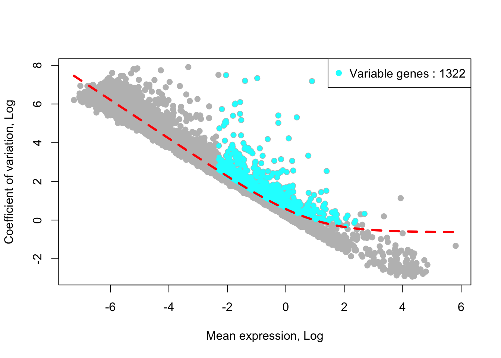
Integration without the correction of unwanted source of variations
We would like to investigate what are covariates that are the key drivers of the data such as batches, donors, sampleIDs, conditions, etc. The analysis without applying integrative methods will be performed.
PCA anlysis
Top 50 PCs will be calculated using irlba method from https://github.com/bwlewis/irlba The parameter “use.regressout.data” is critical. If TRUE, PCA uses the regressout data. If FALSE, PCA uses the normalized data without removing any umwanted source of variations.
runPCA(human_HSPCs,use.components=50,use.regressout.data = F)## [1] "PCA analysis is done!."Next, the number of PCs used for the donwstream analysis will be determined from the scree plot.
plot_PCA_Elbowplot(human_HSPCs)UMAP analysis
runUMAP(human_HSPCs,dim_reduction_method = "pca",n.dims.use = 30,n.neighbors = 30,
uwot.metric = "euclidean")## 00:41:33 UMAP embedding parameters a = 1.121 b = 1.057## 00:41:33 Read 5000 rows and found 30 numeric columns## 00:41:33 Using Annoy for neighbor search, n_neighbors = 30## 00:41:33 Building Annoy index with metric = euclidean, n_trees = 50## 0% 10 20 30 40 50 60 70 80 90 100%## [----|----|----|----|----|----|----|----|----|----|## **************************************************|
## 00:41:33 Writing NN index file to temp file /var/folders/c6/_w309xr54n7cphf9nw4x_ms40000gn/T//RtmpO2yfys/file221f50727a5a
## 00:41:33 Searching Annoy index using 8 threads, search_k = 3000
## 00:41:34 Annoy recall = 100%
## 00:41:34 Commencing smooth kNN distance calibration using 8 threads
## 00:41:35 Initializing from normalized Laplacian + noise
## 00:41:35 Commencing optimization for 500 epochs, with 210330 positive edges
## 00:41:41 Optimization finished## [1] "UMAP analysis is done!."Plot UMAP with sampleIDs
plot_umap_label_by_a_feature_of_interest(human_HSPCs,feature = "sampleID",point.size = 0.5)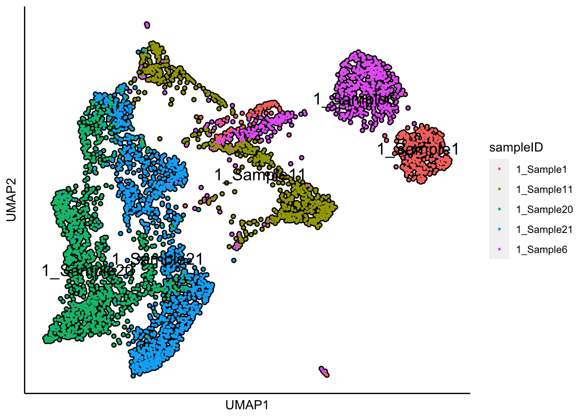 The UMAP plot shows the sample effect, whereas different donors are clustered by the sampleID.
Plot UMAP with the sample status
plot_umap_label_by_a_feature_of_interest(human_HSPCs,feature = "status",point.size = 0.5)UMAP plot shows the separation of samples by healthy donors and myelofibrosis patients. Therefore, we have to correct for the donor effect. We will not use ‘status’ as the covariate for the correction since we might remove the meaningful biological differences between healthy and disease conditions. The followings are the workflow of using different integrative methods implemented in SingCellaR.
Supervised harmony integration
To run supervised harmony integration, the harmony software must be installed https://github.com/immunogenomics/harmony. Supervised harmony requires clustering information and differentially expressed genes across clusters for each individual sample as the input.
runSupervised_Harmony(human_HSPCs,covariates = c("sampleID"),n.dims.use = 20,
hcl.height.cutoff = 0.25,harmony.max.iter = 20,n.seed = 1)## [1] "Processing fGSEA for: cl1_1"
## [1] "Processing fGSEA for: cl2_1"
## [1] "Processing fGSEA for: cl3_1"
## [1] "Processing fGSEA for: cl4_1"
## [1] "Processing fGSEA for: cl5_1"
## [1] "Processing fGSEA for: cl6_1"
## [1] "Processing fGSEA for: cl7_1"
## [1] "Processing fGSEA for: cl8_1"
## [1] "Processing fGSEA for: cl9_1"
## [1] "Processing fGSEA for: cl10_1"
## [1] "Processing fGSEA for: cl11_1"
## [1] "Processing fGSEA for: cl12_1"
## [1] "Processing fGSEA for: cl1_2"
## [1] "Processing fGSEA for: cl2_2"
## [1] "Processing fGSEA for: cl3_2"
## [1] "Processing fGSEA for: cl4_2"
## [1] "Processing fGSEA for: cl5_2"
## [1] "Processing fGSEA for: cl6_2"
## [1] "Processing fGSEA for: cl7_2"
## [1] "Processing fGSEA for: cl8_2"
## [1] "Processing fGSEA for: cl9_2"
## [1] "Processing fGSEA for: cl10_2"
## [1] "Processing fGSEA for: cl11_2"
## [1] "Processing fGSEA for: cl12_2"
## [1] "Processing fGSEA for: cl13_2"
## [1] "Processing fGSEA for: cl14_2"
## [1] "Processing fGSEA for: cl15_2"
## [1] "Processing fGSEA for: cl16_2"
## [1] "Processing fGSEA for: cl17_2"
## [1] "Processing fGSEA for: cl1_3"
## [1] "Processing fGSEA for: cl2_3"
## [1] "Processing fGSEA for: cl3_3"
## [1] "Processing fGSEA for: cl4_3"
## [1] "Processing fGSEA for: cl5_3"
## [1] "Processing fGSEA for: cl6_3"
## [1] "Processing fGSEA for: cl7_3"
## [1] "Processing fGSEA for: cl8_3"
## [1] "Processing fGSEA for: cl9_3"## Warning in fgsea(pathways = y.genes.db, stats = prerank.genes, minSize =
## gsea.minSize, : There were 3 pathways for which P-values were not calculated
## properly due to unbalanced gene-level statistic values## [1] "Processing fGSEA for: cl10_3"
## [1] "Processing fGSEA for: cl11_3"
## [1] "Processing fGSEA for: cl12_3"
## [1] "Processing fGSEA for: cl13_3"
## [1] "Processing fGSEA for: cl15_3"
## [1] "Processing fGSEA for: cl16_3"
## [1] "Processing fGSEA for: cl1_4"
## [1] "Processing fGSEA for: cl2_4"
## [1] "Processing fGSEA for: cl3_4"
## [1] "Processing fGSEA for: cl4_4"
## [1] "Processing fGSEA for: cl5_4"
## [1] "Processing fGSEA for: cl6_4"
## [1] "Processing fGSEA for: cl7_4"
## [1] "Processing fGSEA for: cl8_4"
## [1] "Processing fGSEA for: cl9_4"
## [1] "Processing fGSEA for: cl10_4"
## [1] "Processing fGSEA for: cl11_4"
## [1] "Processing fGSEA for: cl12_4"
## [1] "Processing fGSEA for: cl13_4"
## [1] "Processing fGSEA for: cl14_4"
## [1] "Processing fGSEA for: cl1_5"
## [1] "Processing fGSEA for: cl2_5"
## [1] "Processing fGSEA for: cl3_5"
## [1] "Processing fGSEA for: cl4_5"
## [1] "Processing fGSEA for: cl5_5"
## [1] "Processing fGSEA for: cl6_5"
## [1] "Processing fGSEA for: cl7_5"
## [1] "Processing fGSEA for: cl8_5"## Warning in fgsea(pathways = y.genes.db, stats = prerank.genes, minSize =
## gsea.minSize, : There were 2 pathways for which P-values were not calculated
## properly due to unbalanced gene-level statistic values## [1] "Processing fGSEA for: cl9_5"
## [1] "Processing fGSEA for: cl10_5"
## [1] "Processing fGSEA for: cl11_5"
## [1] "Processing fGSEA for: cl12_5"
## [1] "Processing fGSEA for: cl13_5"
## [1] "Processing fGSEA for: cl14_5"
## [1] "Identify : 21 matched and 4 uniquely un-matched clusters!"
## [1] "25 cluster centers will be used as the pre-assigned clusters for harmony!"
## [1] "Supervised harmony analysis is done!."UMAP analysis
runUMAP(human_HSPCs,useIntegrativeEmbeddings = T, integrative_method = "supervised_harmony",n.dims.use = 20,
n.neighbors = 30,uwot.metric = "euclidean")## 00:42:04 UMAP embedding parameters a = 1.121 b = 1.057## 00:42:04 Read 5000 rows and found 20 numeric columns## 00:42:04 Using Annoy for neighbor search, n_neighbors = 30## 00:42:04 Building Annoy index with metric = euclidean, n_trees = 50## 0% 10 20 30 40 50 60 70 80 90 100%## [----|----|----|----|----|----|----|----|----|----|## **************************************************|
## 00:42:05 Writing NN index file to temp file /var/folders/c6/_w309xr54n7cphf9nw4x_ms40000gn/T//RtmpO2yfys/file221f2dae87dc
## 00:42:05 Searching Annoy index using 8 threads, search_k = 3000
## 00:42:05 Annoy recall = 100%
## 00:42:06 Commencing smooth kNN distance calibration using 8 threads
## 00:42:06 Initializing from normalized Laplacian + noise
## 00:42:06 Commencing optimization for 500 epochs, with 220456 positive edges
## 00:42:13 Optimization finished## [1] "UMAP analysis is done!."Plot UMAP with sampleIDs
plot_umap_label_by_a_feature_of_interest(human_HSPCs,feature = "sampleID",point.size = 0.5)Plot UMAP with sample status
plot_umap_label_by_a_feature_of_interest(human_HSPCs,feature = "status",point.size = 0.5)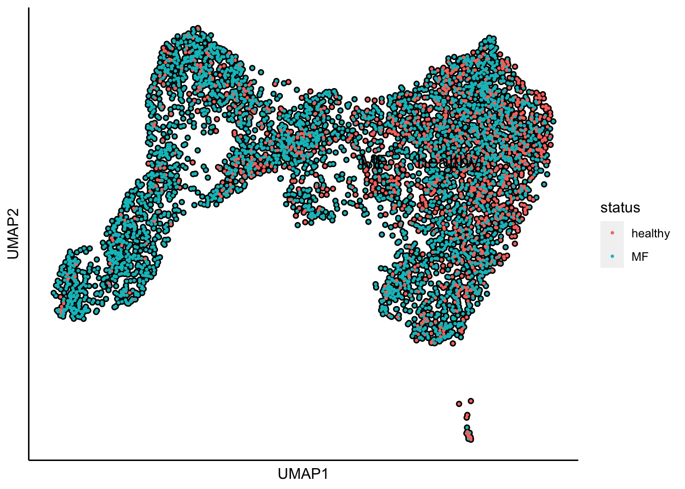
The superimpose of signature gene scores
The plot below is the superimposed gene scores from erythroid, myeloid, lymphoid, and megakaryocyte gene sets on top UMAP and force-directed graph respectively.
plot_umap_label_by_multiple_gene_sets(human_HSPCs,gmt.file = "../SingCellaR_example_data_sets/Human_gene_sets/human.signature.genes.v1.gmt",
show_gene_sets = c("Erythroid","Lymphoid","Myeloid","Megakaryocyte"),
custom_color = c("red","orange","cyan","purple"),
isNormalizedByHouseKeeping = T,point.size = 1,background.color = "black")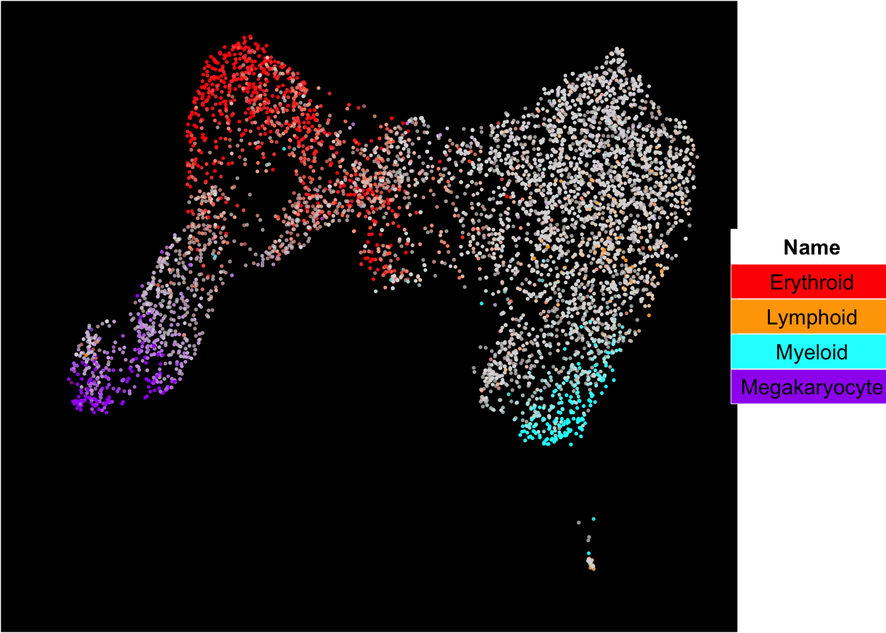
Force-directed graph analysis
SingCellaR incorporates force-directed graph for the visualization of differentiation trajectories.
runFA2_ForceDirectedGraph(human_HSPCs,n.dims.use = 20, useIntegrativeEmbeddings = T,integrative_method = "supervised_harmony",n.neighbors = 5,n.seed = 1,fa2_n_iter = 1000)## [1] "Building Annoy index with metric = euclidean , n_trees = 50"## 0% 10 20 30 40 50 60 70 80 90 100%## [----|----|----|----|----|----|----|----|----|----|## **************************************************|## [1] "Searching Annoy index, search_k = 500"## 0% 10 20 30 40 50 60 70 80 90 100%
## [----|----|----|----|----|----|----|----|----|----|
## **************************************************|## [1] "Processing fa2.."
## [1] "Force directed graph analysis is done!."plot_forceDirectedGraph_label_by_multiple_gene_sets(human_HSPCs,gmt.file = "../SingCellaR_example_data_sets/Human_gene_sets/human.signature.genes.v1.gmt",
show_gene_sets = c("Erythroid","Lymphoid","Myeloid","Megakaryocyte"),
custom_color = c("red","orange","cyan","purple"),
isNormalizedByHouseKeeping = T,vertex.size = 1,edge.size = 0.05,
background.color = "black")Harmony integration
To run harmony integration, the harmony software must be installed https://github.com/immunogenomics/harmony.
runHarmony(human_HSPCs,covariates = c("sampleID"),n.dims.use = 20,harmony.max.iter = 20,n.seed = 1)## [1] "Harmony analysis is done!."UMAP analysis
runUMAP(human_HSPCs,useIntegrativeEmbeddings = T, integrative_method = "harmony",n.dims.use = 20,
n.neighbors = 30,uwot.metric = "euclidean")## 00:42:51 UMAP embedding parameters a = 1.121 b = 1.057## 00:42:51 Read 5000 rows and found 20 numeric columns## 00:42:51 Using Annoy for neighbor search, n_neighbors = 30## 00:42:51 Building Annoy index with metric = euclidean, n_trees = 50## 0% 10 20 30 40 50 60 70 80 90 100%## [----|----|----|----|----|----|----|----|----|----|## **************************************************|
## 00:42:52 Writing NN index file to temp file /var/folders/c6/_w309xr54n7cphf9nw4x_ms40000gn/T//RtmpO2yfys/file221f7c7b000f
## 00:42:52 Searching Annoy index using 8 threads, search_k = 3000
## 00:42:52 Annoy recall = 100%
## 00:42:53 Commencing smooth kNN distance calibration using 8 threads
## 00:42:53 Initializing from normalized Laplacian + noise
## 00:42:53 Commencing optimization for 500 epochs, with 218124 positive edges
## 00:43:00 Optimization finished## [1] "UMAP analysis is done!."Plot UMAP with sampleIDs
plot_umap_label_by_a_feature_of_interest(human_HSPCs,feature = "sampleID",point.size = 0.5)
Plot UMAP with the sample status
plot_umap_label_by_a_feature_of_interest(human_HSPCs,feature = "status",point.size = 0.5)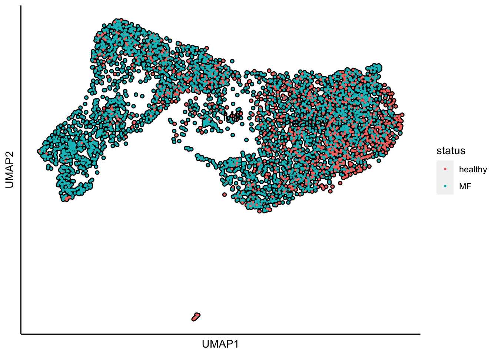
The superimpose of signature gene scores
The plot below is the superimposed gene scores from erythroid, myeloid, lymphoid, and megakaryocyte gene sets on top UMAP and force-directed graph respectively.
plot_umap_label_by_multiple_gene_sets(human_HSPCs,gmt.file = "../SingCellaR_example_data_sets/Human_gene_sets/human.signature.genes.v1.gmt",
show_gene_sets = c("Erythroid","Lymphoid","Myeloid","Megakaryocyte"),
custom_color = c("red","orange","cyan","purple"),
isNormalizedByHouseKeeping = T,point.size = 1,background.color = "black")Force-directed graph analysis
SingCellaR incorporates force-directed graph for the visualization of differentiation trajectories.
runFA2_ForceDirectedGraph(human_HSPCs,n.dims.use = 20, useIntegrativeEmbeddings = T,integrative_method = "harmony",n.neighbors = 5,n.seed = 1,fa2_n_iter = 1000)## [1] "Building Annoy index with metric = euclidean , n_trees = 50"## 0% 10 20 30 40 50 60 70 80 90 100%## [----|----|----|----|----|----|----|----|----|----|## **************************************************|## [1] "Searching Annoy index, search_k = 500"## 0% 10 20 30 40 50 60 70 80 90 100%
## [----|----|----|----|----|----|----|----|----|----|
## **************************************************|## [1] "Processing fa2.."
## [1] "Force directed graph analysis is done!."plot_forceDirectedGraph_label_by_multiple_gene_sets(human_HSPCs,gmt.file = "../SingCellaR_example_data_sets/Human_gene_sets/human.signature.genes.v1.gmt",
show_gene_sets = c("Erythroid","Lymphoid","Myeloid","Megakaryocyte"),
custom_color = c("red","orange","cyan","purple"),
isNormalizedByHouseKeeping = T,vertex.size = 1,edge.size = 0.1,
background.color = "black")Seurat integration
To run Seurat integration, Seurat (version 3.1.5) software must be installed https://satijalab.org/seurat/install.html. The parameter ‘use.SingCellaR.varGenes’ is important. If TRUE, Seurate will use highly variable genes from the combination of all variable genes detected by SingCellaR analysis from individual donor. If FALSE, Seurat will identify highly variable genes by default.
meta.data<-get_cells_annotation(human_HSPCs)
rownames(meta.data)<-meta.data$Cell
runSeuratIntegration(human_HSPCs,Seurat.metadata=meta.data,n.dims.use = 20,
Seurat.split.by = "data_set",use.SingCellaR.varGenes = T)##
|
| | 0%[1] "Process each Seurat object.."
##
|
|============== | 20%
|
|============================ | 40%
|
|========================================== | 60%
|
|======================================================== | 80%
|
|======================================================================| 100%[1] "This process will take time and requires large RAM depending on the number of cells in your integration."## Warning: Adding a command log without an assay associated with it## [1] "Seurat integrative analysis is done!."UMAP analysis
runUMAP(human_HSPCs,useIntegrativeEmbeddings = T, integrative_method = "seurat",n.dims.use = 20,
n.neighbors = 30,uwot.metric = "euclidean")## 00:44:33 UMAP embedding parameters a = 1.121 b = 1.057## 00:44:33 Read 5000 rows and found 20 numeric columns## 00:44:33 Using Annoy for neighbor search, n_neighbors = 30## 00:44:33 Building Annoy index with metric = euclidean, n_trees = 50## 0% 10 20 30 40 50 60 70 80 90 100%## [----|----|----|----|----|----|----|----|----|----|## **************************************************|
## 00:44:33 Writing NN index file to temp file /var/folders/c6/_w309xr54n7cphf9nw4x_ms40000gn/T//RtmpO2yfys/file221f15ffe870
## 00:44:33 Searching Annoy index using 8 threads, search_k = 3000
## 00:44:33 Annoy recall = 100%
## 00:44:34 Commencing smooth kNN distance calibration using 8 threads
## 00:44:35 Initializing from normalized Laplacian + noise
## 00:44:35 Commencing optimization for 500 epochs, with 226792 positive edges
## 00:44:42 Optimization finished## [1] "UMAP analysis is done!."Plot UMAP with sampleIDs
plot_umap_label_by_a_feature_of_interest(human_HSPCs,feature = "sampleID",point.size = 0.5)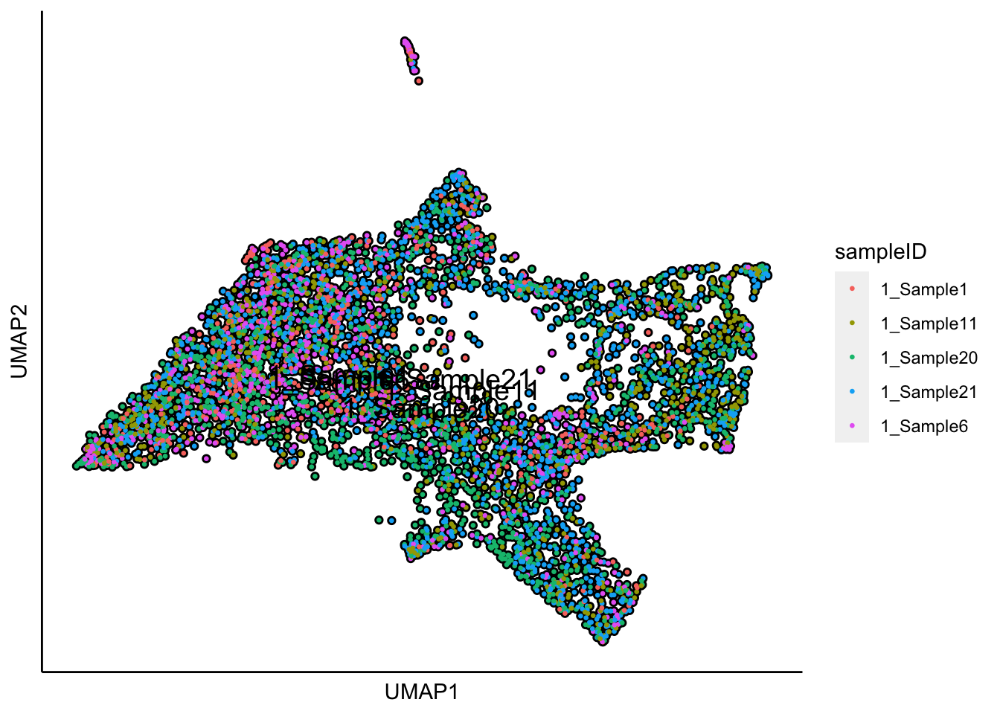
Plot UMAP with the sample status
plot_umap_label_by_a_feature_of_interest(human_HSPCs,feature = "status",point.size = 0.5)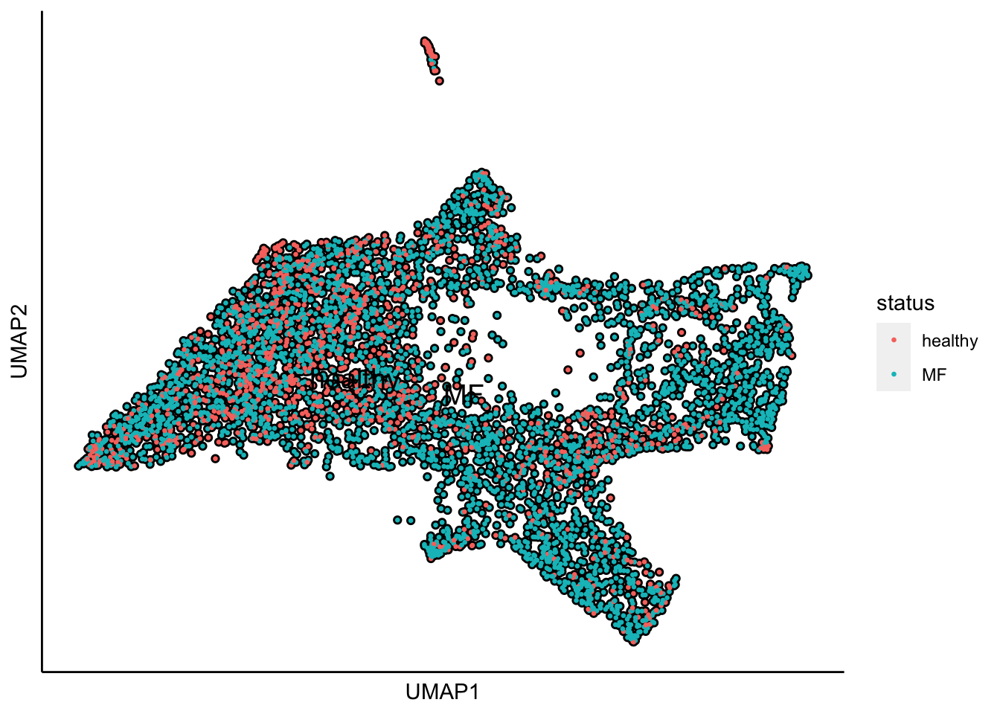
The superimpose of signature gene scores
The plot below is the superimposed gene scores from erythroid, myeloid, lymphoid, and megakaryocyte gene sets on top UMAP and force-directed graph respectively.
plot_umap_label_by_multiple_gene_sets(human_HSPCs,gmt.file = "../SingCellaR_example_data_sets/Human_gene_sets/human.signature.genes.v1.gmt",
show_gene_sets = c("Erythroid","Lymphoid","Myeloid","Megakaryocyte"),
custom_color = c("red","orange","cyan","purple"),
isNormalizedByHouseKeeping = T,point.size = 1,background.color = "black")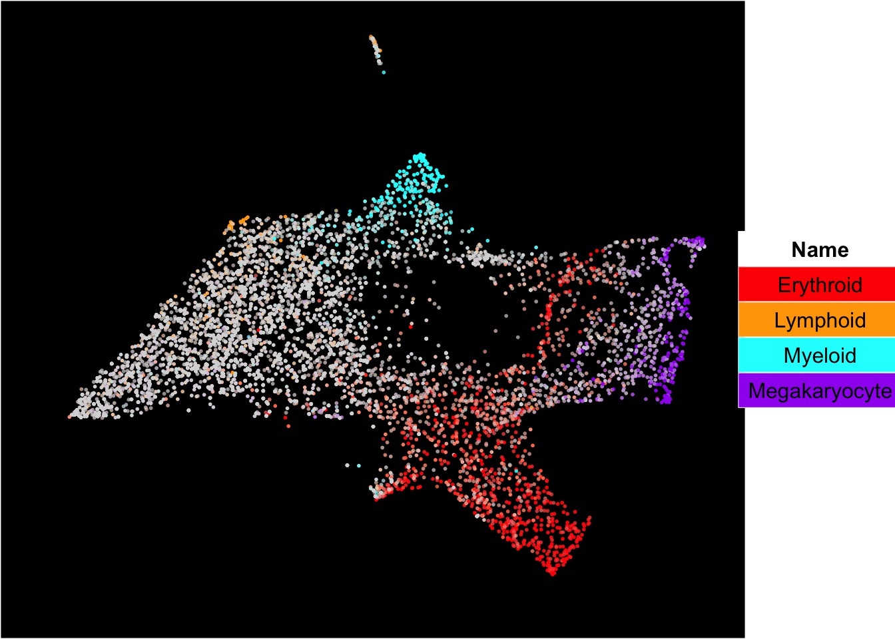
Force-directed graph analysis
SingCellaR incorporates force-directed graph for the visualization of differentiation trajectories.
runFA2_ForceDirectedGraph(human_HSPCs,n.dims.use = 20, useIntegrativeEmbeddings = T,integrative_method = "seurat",n.neighbors = 5,n.seed = 1,fa2_n_iter = 1000)## [1] "Building Annoy index with metric = euclidean , n_trees = 50"## 0% 10 20 30 40 50 60 70 80 90 100%## [----|----|----|----|----|----|----|----|----|----|## **************************************************|## [1] "Searching Annoy index, search_k = 500"## 0% 10 20 30 40 50 60 70 80 90 100%
## [----|----|----|----|----|----|----|----|----|----|
## **************************************************|## [1] "Processing fa2.."
## [1] "Force directed graph analysis is done!."plot_forceDirectedGraph_label_by_multiple_gene_sets(human_HSPCs,gmt.file = "../SingCellaR_example_data_sets/Human_gene_sets/human.signature.genes.v1.gmt",
show_gene_sets = c("Erythroid","Lymphoid","Myeloid","Megakaryocyte"),
custom_color = c("red","orange","cyan","purple"),
isNormalizedByHouseKeeping = T,vertex.size = 1,edge.size = 0.1,
background.color = "black")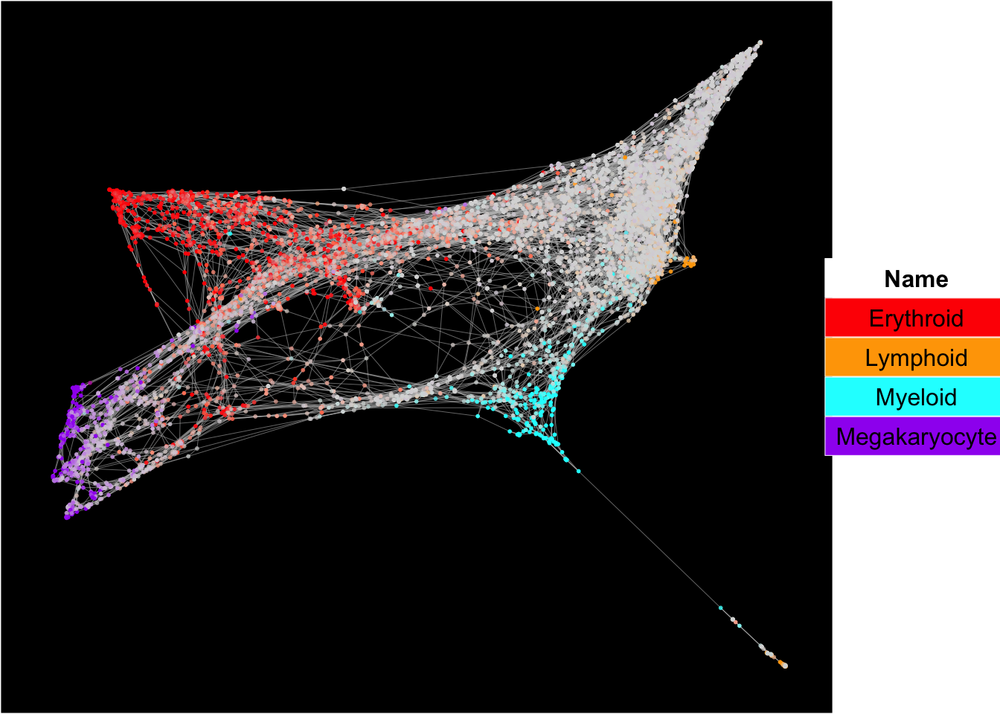
Liger integration
To run Liger integration, Liger (version 0.5.0) software must be installed https://github.com/MacoskoLab/liger.
runLiger(human_HSPCs,liger.k = 20)## [1] "This process will take time and requires large RAM depending on the number of cells in your integration."
## [1] "Removing 15825 genes not expressing in s5."
## [1] "Removing 15088 genes not expressing in s3."
## [1] "Removing 14855 genes not expressing in s4."
## [1] "Removing 16075 genes not expressing in s2."
## [1] "Removing 16055 genes not expressing in s1."
##
|
| | 0%
|
|== | 3%
|
|===== | 7%
|
|======= | 10%
|
|========= | 13%
|
|============ | 17%
|
|============== | 20%
|
|================ | 23%
|
|=================== | 27%
|
|===================== | 30%
|
|======================= | 33%
|
|========================== | 37%
|
|============================ | 40%
|
|============================== | 43%
|
|================================= | 47%
|
|=================================== | 50%
|
|===================================== | 53%
|
|======================================== | 57%
|
|========================================== | 60%
|
|============================================ | 63%
|
|=============================================== | 67%
|
|================================================= | 70%
|
|=================================================== | 73%
|
|====================================================== | 77%
|
|======================================================== | 80%
|
|========================================================== | 83%
|
|============================================================= | 87%
|
|=============================================================== | 90%
|
|================================================================= | 93%
|
|==================================================================== | 97%
|
|======================================================================| 100%
## Finished in 3.774362 mins, 30 iterations.
## Max iterations set: 30.
## Final objective delta: 0.0001592596.
## Best results with seed 1.
## [1] "Liger analysis is done!."UMAP analysis
runUMAP(human_HSPCs,useIntegrativeEmbeddings = T, integrative_method = "liger",n.dims.use = 20,
n.neighbors = 30,uwot.metric = "euclidean")## 00:49:05 UMAP embedding parameters a = 1.121 b = 1.057## 00:49:05 Read 5000 rows and found 20 numeric columns## 00:49:05 Using Annoy for neighbor search, n_neighbors = 30## 00:49:05 Building Annoy index with metric = euclidean, n_trees = 50## 0% 10 20 30 40 50 60 70 80 90 100%## [----|----|----|----|----|----|----|----|----|----|## **************************************************|
## 00:49:05 Writing NN index file to temp file /var/folders/c6/_w309xr54n7cphf9nw4x_ms40000gn/T//RtmpO2yfys/file221fee8216e
## 00:49:05 Searching Annoy index using 8 threads, search_k = 3000
## 00:49:05 Annoy recall = 100%
## 00:49:06 Commencing smooth kNN distance calibration using 8 threads
## 00:49:07 Initializing from normalized Laplacian + noise
## 00:49:07 Commencing optimization for 500 epochs, with 194298 positive edges
## 00:49:13 Optimization finished## [1] "UMAP analysis is done!."Plot UMAP with sampleIDs
plot_umap_label_by_a_feature_of_interest(human_HSPCs,feature = "sampleID",point.size = 0.5)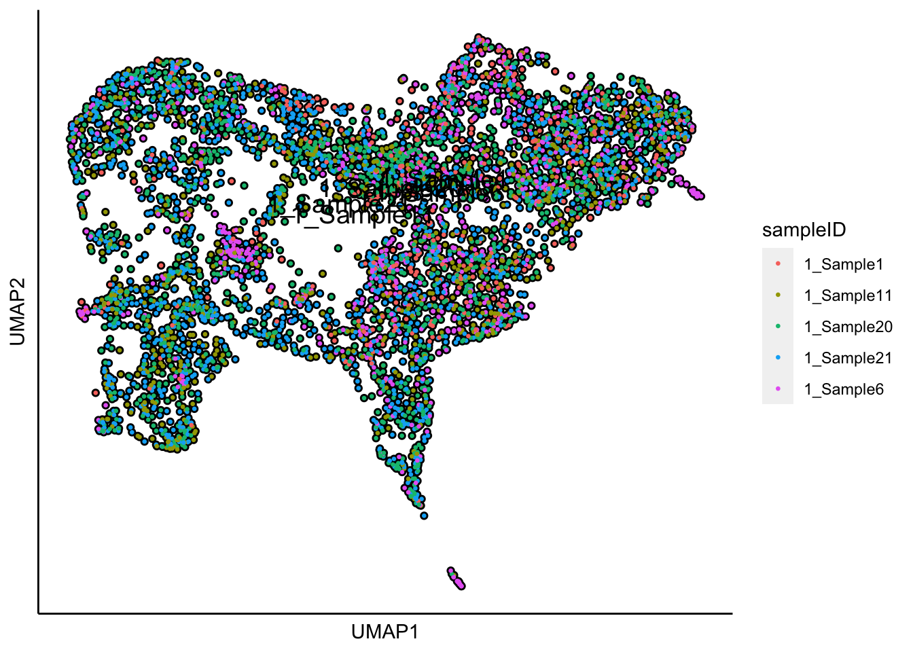
Plot UMAP with the sample status
plot_umap_label_by_a_feature_of_interest(human_HSPCs,feature = "status",point.size = 0.5)
The superimpose of signature gene scores
The plot below is the superimposed gene scores from erythroid, myeloid, lymphoid, and megakaryocyte gene sets on top UMAP and force-directed graph respectively.
plot_umap_label_by_multiple_gene_sets(human_HSPCs,gmt.file = "../SingCellaR_example_data_sets/Human_gene_sets/human.signature.genes.v1.gmt",
show_gene_sets = c("Erythroid","Lymphoid","Myeloid","Megakaryocyte"),
custom_color = c("red","orange","cyan","purple"),
isNormalizedByHouseKeeping = T,point.size = 1,background.color = "black")Force-directed graph analysis
SingCellaR incorporates force-directed graph for the visualization of differentiation trajectories.
runFA2_ForceDirectedGraph(human_HSPCs,n.dims.use = 20, useIntegrativeEmbeddings = T,integrative_method = "liger",n.neighbors = 5,n.seed = 1,fa2_n_iter = 1000)## [1] "Building Annoy index with metric = euclidean , n_trees = 50"## 0% 10 20 30 40 50 60 70 80 90 100%## [----|----|----|----|----|----|----|----|----|----|## **************************************************|## [1] "Searching Annoy index, search_k = 500"## 0% 10 20 30 40 50 60 70 80 90 100%
## [----|----|----|----|----|----|----|----|----|----|
## **************************************************|## [1] "Processing fa2.."
## [1] "Force directed graph analysis is done!."plot_forceDirectedGraph_label_by_multiple_gene_sets(human_HSPCs,gmt.file = "../SingCellaR_example_data_sets/Human_gene_sets/human.signature.genes.v1.gmt",
show_gene_sets = c("Erythroid","Lymphoid","Myeloid","Megakaryocyte"),
custom_color = c("red","orange","cyan","purple"),
isNormalizedByHouseKeeping = T,vertex.size = 1,edge.size = 0.1,
background.color = "black")
Scanorama integration
To run scanorama integration, Scanorama software must be installed https://github.com/brianhie/scanorama.
runScanorama(human_HSPCs)## [1] "This process will take time and requires large RAM depending on the number of cells in your integration."
## [1] "Scanorama analysis is done!."PCA analysis
runPCA(human_HSPCs,use.scanorama.integrative.matrix = T,use.components = 50)## [1] "The scanorama matrix will be used for PCA!"
## [1] "PCA analysis is done!."UMAP analysis
runUMAP(human_HSPCs,dim_reduction_method = "pca",
n.dims.use = 20,n.neighbors = 30,uwot.metric = "euclidean")## 00:49:52 UMAP embedding parameters a = 1.121 b = 1.057## 00:49:52 Read 5000 rows and found 20 numeric columns## 00:49:52 Using Annoy for neighbor search, n_neighbors = 30## 00:49:52 Building Annoy index with metric = euclidean, n_trees = 50## 0% 10 20 30 40 50 60 70 80 90 100%## [----|----|----|----|----|----|----|----|----|----|## **************************************************|
## 00:49:53 Writing NN index file to temp file /var/folders/c6/_w309xr54n7cphf9nw4x_ms40000gn/T//RtmpO2yfys/file221f36beaf15
## 00:49:53 Searching Annoy index using 8 threads, search_k = 3000
## 00:49:53 Annoy recall = 100%
## 00:49:53 Commencing smooth kNN distance calibration using 8 threads
## 00:49:54 Initializing from normalized Laplacian + noise
## 00:49:54 Commencing optimization for 500 epochs, with 224654 positive edges
## 00:50:00 Optimization finished## [1] "UMAP analysis is done!."Plot UMAP with sampleIDs
plot_umap_label_by_a_feature_of_interest(human_HSPCs,feature = "sampleID",point.size = 0.5)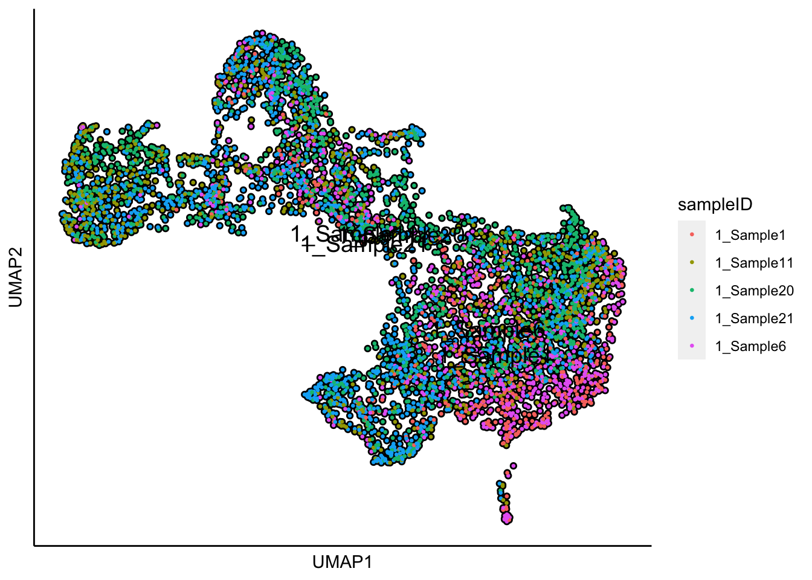
Plot UMAP with the sample status
plot_umap_label_by_a_feature_of_interest(human_HSPCs,feature = "status",point.size = 0.5)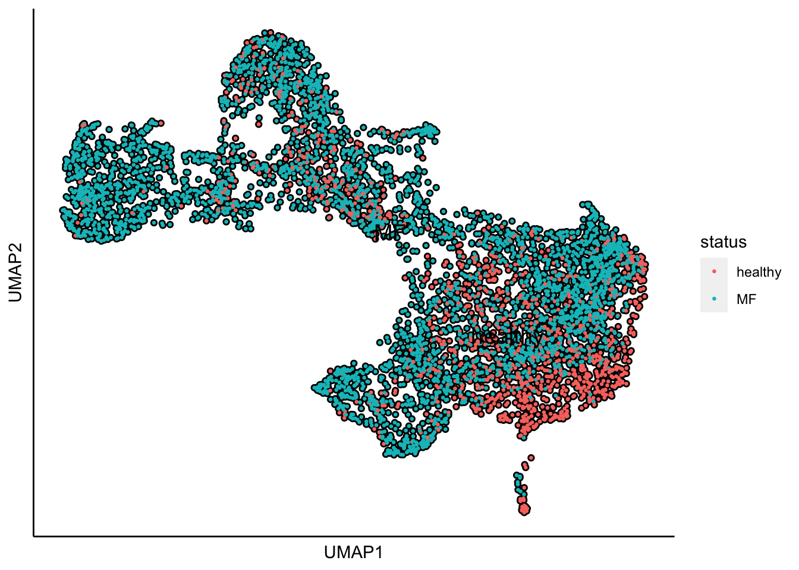
The superimpose of signature gene scores
The plot below is the superimposed gene scores from erythroid, myeloid, lymphoid, and megakaryocyte gene sets on top UMAP and force-directed graph respectively.
plot_umap_label_by_multiple_gene_sets(human_HSPCs,gmt.file = "../SingCellaR_example_data_sets/Human_gene_sets/human.signature.genes.v1.gmt",
show_gene_sets = c("Erythroid","Lymphoid","Myeloid","Megakaryocyte"),
custom_color = c("red","orange","cyan","purple"),
isNormalizedByHouseKeeping = T,point.size = 1,background.color = "black")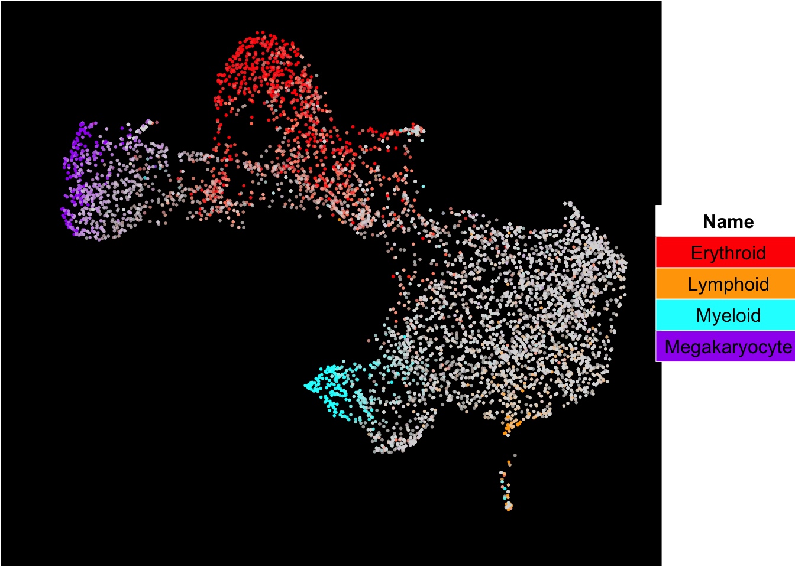
Force-directed graph analysis
SingCellaR incorporates force-directed graph for the visualization of differentiation trajectories.
runFA2_ForceDirectedGraph(human_HSPCs,n.dims.use = 20,dim_reduction_method = "pca")## [1] "Building Annoy index with metric = euclidean , n_trees = 50"## 0% 10 20 30 40 50 60 70 80 90 100%## [----|----|----|----|----|----|----|----|----|----|## **************************************************|## [1] "Searching Annoy index, search_k = 500"## 0% 10 20 30 40 50 60 70 80 90 100%
## [----|----|----|----|----|----|----|----|----|----|
## **************************************************|## [1] "Processing fa2.."
## [1] "Force directed graph analysis is done!."plot_forceDirectedGraph_label_by_multiple_gene_sets(human_HSPCs,gmt.file = "../SingCellaR_example_data_sets/Human_gene_sets/human.signature.genes.v1.gmt",
show_gene_sets = c("Erythroid","Lymphoid","Myeloid","Megakaryocyte"),
custom_color = c("red","orange","cyan","purple"),
isNormalizedByHouseKeeping = T,vertex.size = 1,edge.size = 0.1,
background.color = "black")
Combat
To run Combat, the SVA software must be installed https://bioconductor.org/packages/release/bioc/html/sva.html.
runCombat(human_HSPCs,use.reduced_dim = F,batch_identifier = "sampleID")## Found5batches## Adjusting for0covariate(s) or covariate level(s)## Standardizing Data across genes## Fitting L/S model and finding priors## Finding parametric adjustments## Adjusting the Data## [1] "Combat analysis is done!"
## [1] "The batch-free matrix is now in the regressout_matrix slot!"
## [1] "Please continue PCA analysis with 'use.regressout.data=T'."PCA analysis
runPCA(human_HSPCs,use.regressout.data = T)## [1] "PCA analysis is done!."UMAP analysis
runUMAP(human_HSPCs,dim_reduction_method = "pca",n.dims.use = 20, n.neighbors = 20,uwot.metric = "euclidean")## 00:50:38 UMAP embedding parameters a = 1.121 b = 1.057## 00:50:38 Read 5000 rows and found 20 numeric columns## 00:50:38 Using Annoy for neighbor search, n_neighbors = 20## 00:50:38 Building Annoy index with metric = euclidean, n_trees = 50## 0% 10 20 30 40 50 60 70 80 90 100%## [----|----|----|----|----|----|----|----|----|----|## **************************************************|
## 00:50:38 Writing NN index file to temp file /var/folders/c6/_w309xr54n7cphf9nw4x_ms40000gn/T//RtmpO2yfys/file221f11b66a3e
## 00:50:38 Searching Annoy index using 8 threads, search_k = 2000
## 00:50:38 Annoy recall = 100%
## 00:50:39 Commencing smooth kNN distance calibration using 8 threads
## 00:50:39 Initializing from normalized Laplacian + noise
## 00:50:40 Commencing optimization for 500 epochs, with 142070 positive edges
## 00:50:45 Optimization finished## [1] "UMAP analysis is done!."Plot UMAP with sampleIDs
plot_umap_label_by_a_feature_of_interest(human_HSPCs,feature = "sampleID",point.size = 0.5)Plot UMAP with the sample status
plot_umap_label_by_a_feature_of_interest(human_HSPCs,feature = "status",point.size = 0.5)The superimpose of signature gene scores
The plot below is the superimposed gene scores from erythroid, myeloid, lymphoid, and megakaryocyte gene sets on top UMAP and force-directed graph respectively.
plot_umap_label_by_multiple_gene_sets(human_HSPCs,gmt.file = "../SingCellaR_example_data_sets/Human_gene_sets/human.signature.genes.v1.gmt",
show_gene_sets = c("Erythroid","Lymphoid","Myeloid","Megakaryocyte"),
custom_color = c("red","orange","cyan","purple"),
isNormalizedByHouseKeeping = T,point.size = 1,background.color = "black")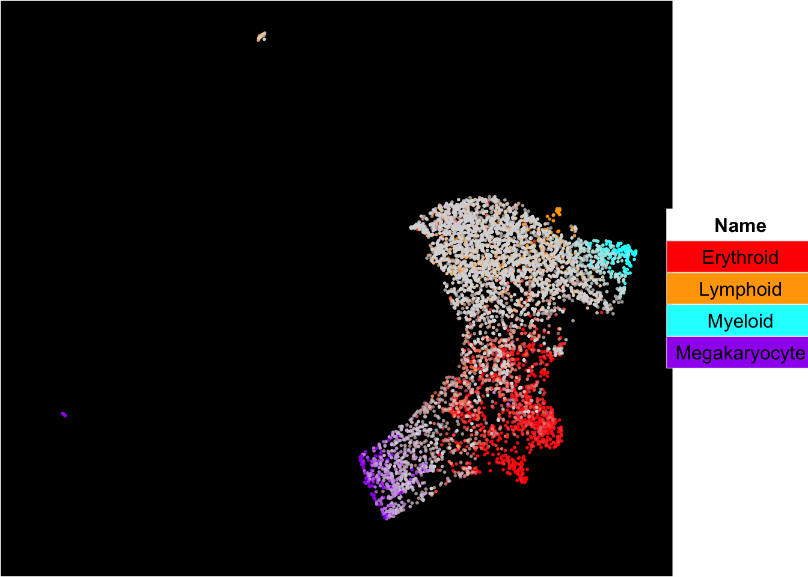
Force-directed graph analysis
SingCellaR incorporates force-directed graph for the visualization of differentiation trajectories.
runFA2_ForceDirectedGraph(human_HSPCs,n.dims.use = 20,dim_reduction_method = "pca")## [1] "Building Annoy index with metric = euclidean , n_trees = 50"## 0% 10 20 30 40 50 60 70 80 90 100%## [----|----|----|----|----|----|----|----|----|----|## **************************************************|## [1] "Searching Annoy index, search_k = 500"## 0% 10 20 30 40 50 60 70 80 90 100%
## [----|----|----|----|----|----|----|----|----|----|
## **************************************************|## [1] "Processing fa2.."
## [1] "Force directed graph analysis is done!."plot_forceDirectedGraph_label_by_multiple_gene_sets(human_HSPCs,gmt.file = "../SingCellaR_example_data_sets/Human_gene_sets/human.signature.genes.v1.gmt",
show_gene_sets = c("Erythroid","Lymphoid","Myeloid","Megakaryocyte"),
custom_color = c("red","orange","cyan","purple"),
isNormalizedByHouseKeeping = T,vertex.size = 1,edge.size = 0.1,
background.color = "black")
Save SingCellaR integrative object for further analyses
save(human_HSPCs,file="../SingCellaR_example_data_sets/Psaila_et_al/SingCellaR_objects/human_HSPCs_v0.1.SingCellaR.rdata")